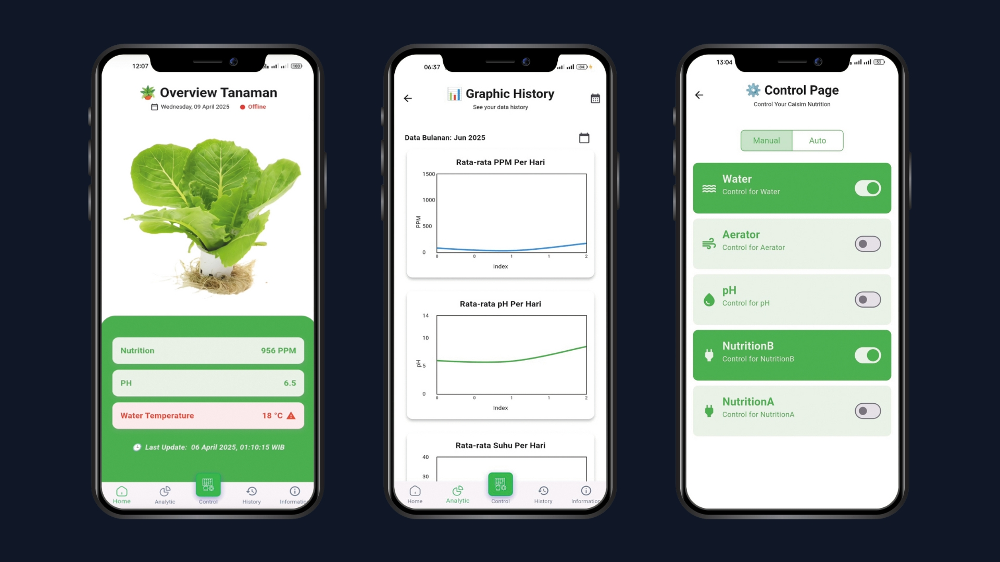

Smart Hydroponic Monitoring App
Mobile App Development

A mobile application that serves as the user interface for a smart hydroponic system, enabling users to monitor and control cultivation parameters in real-time.
Technologies Used: Flutter, Dart, Firebase
Libraries: Fl Charts
Key Features:
- Real-Time Monitoring – Display live sensor data using interactive charts
- Nutrient Tracking – View historical condition and nutrient trends
- Mode Control – Switch between manual and automatic operation
- Dosing History – Record and review nutrient dosing activity
- Cultivation Guide – Provide hydroponic tips and instructions
Source:
Github